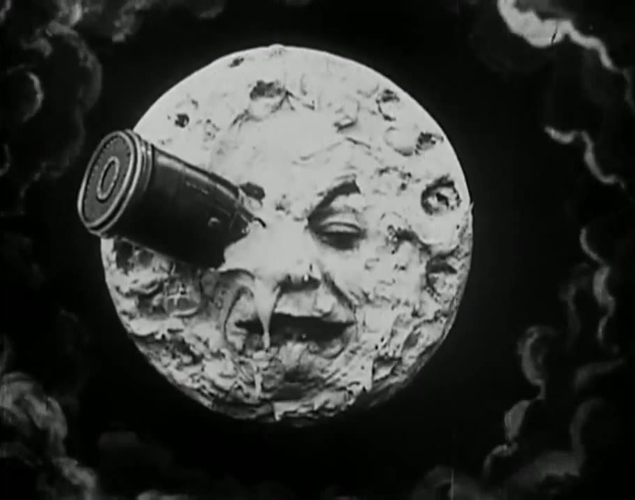

A Trip to the Moon, frame at 6:18
Georges Méliès · 1902 · Silent film, black and white (frame)
Free to use
Méliès could not move his heavy camera toward the Moon, so he pulled the actor toward it instead, seated on a pulley-operated chair on a rail-fitted ramp and covered up to the neck in black velvet. A substitution splice then made a model capsule appear in the actor's eye. The film took three months to make and cost 10,000 francs.